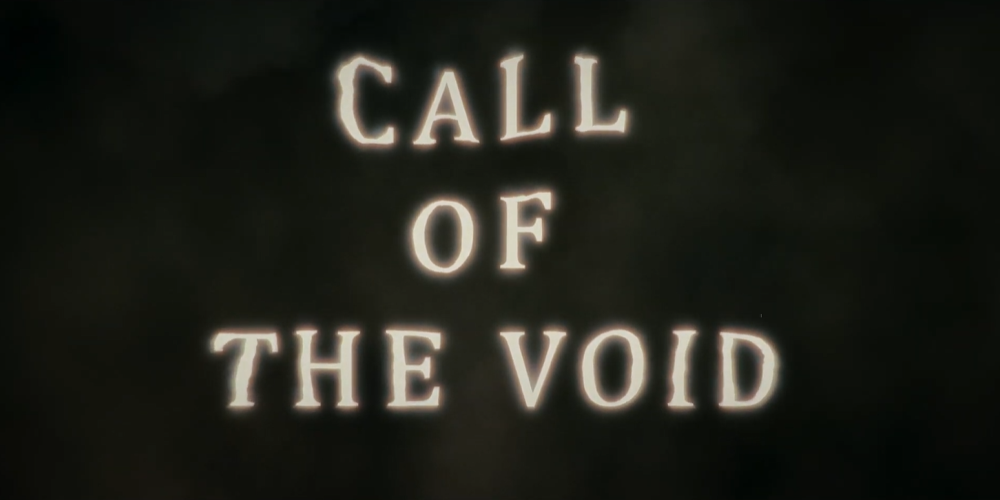

Director and Production Coordinator
for “Call of the Void”
(2023)

Responsibilities:
- Developed the concept and overall vision for the film.
- Managed the film crew and coordinated all stages of production.
- Wrote the script and oversaw all elements of pre-production.
- Organized props and set design, ensuring alignment with the script.
- Led casting calls and auditions to select actors for key roles.
- Scouted and secured filming locations.
- Assigned tasks to the production team and ensured adherence to timelines.
- Juggled the roles of both director and actor in the film.
- Supervised the post-production process, including editing and sound design.
- Presented the film at the official premiere.
Achievements:
- The film, created as part of an academic project, was awarded the best in its group.
- Successfully completed the project on time.
- The film was submitted to several film festivals, including SHORT to the Point, Berlin International Shortfilm Summer, SorsiCorti Short Film Festival, Sulmona International Film Festival, and Torino Underground Cinefest.